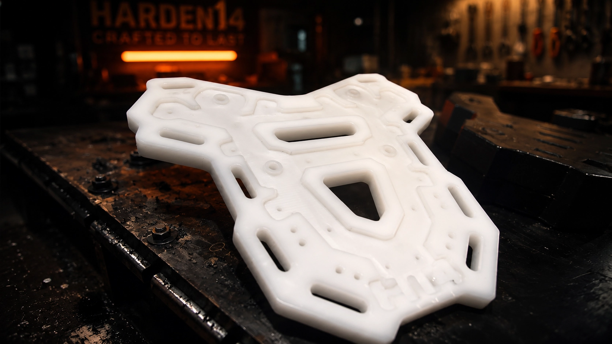
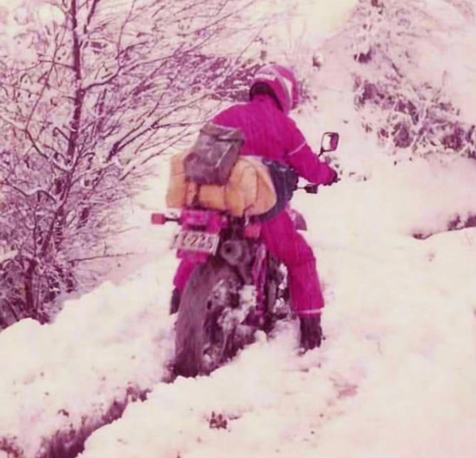
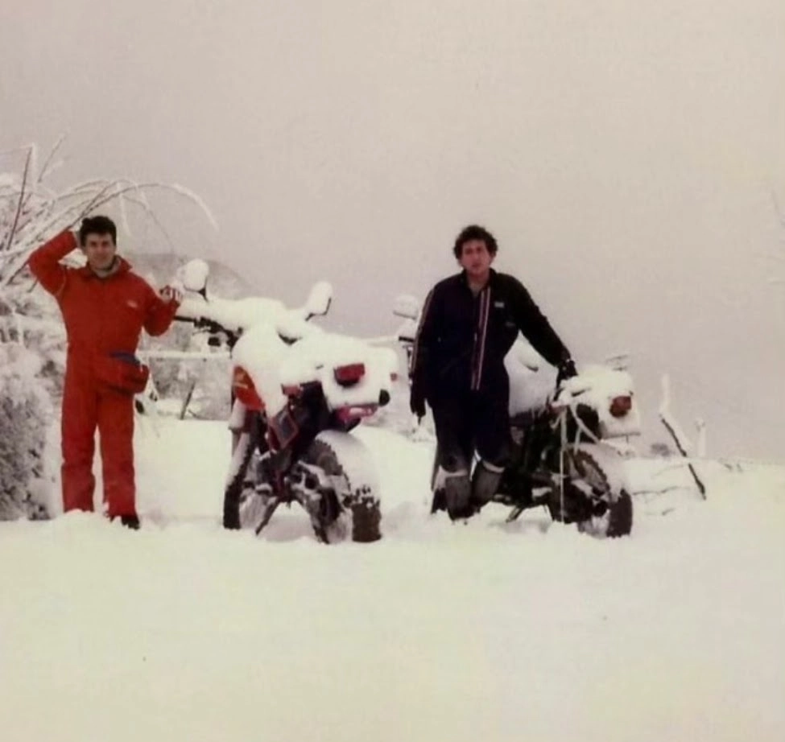
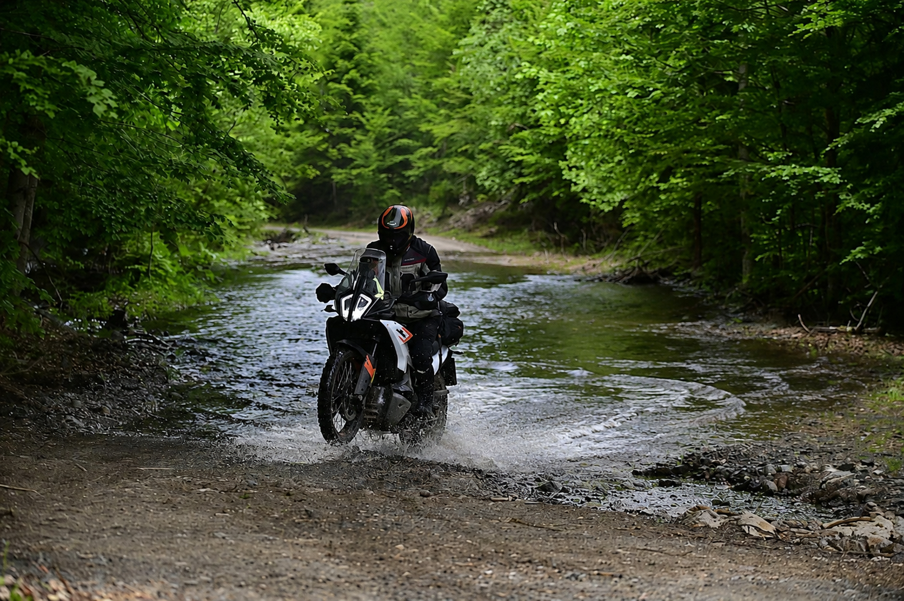
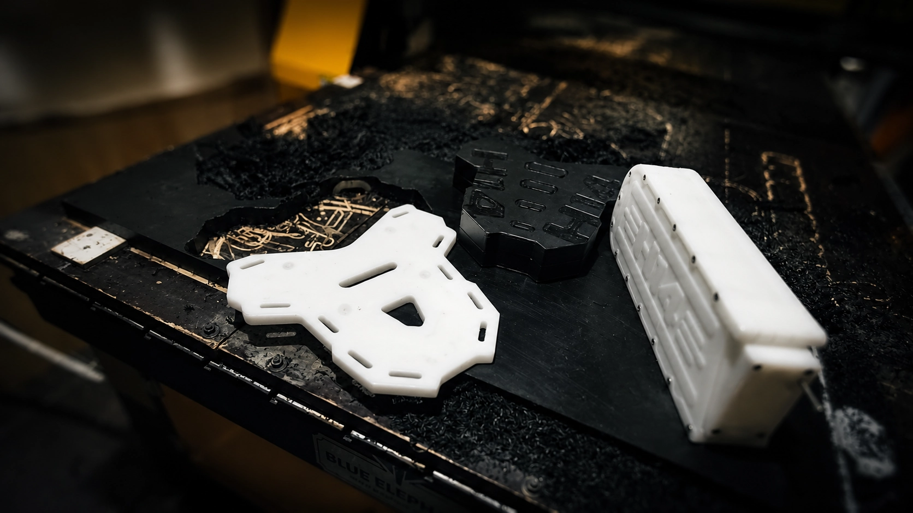

LUGGAGE SOLUTIONS
Tail racks, tool boxes και λύσεις μεταφοράς σχεδιασμένες για ταξίδια χωρίς περιορισμούς.
Γεννημένα από τις διαδρομές.
Δοκιμασμένα χωρίς συμβιβασμούς.


Χωρίς super Adventure μοτοσυκλέτες, χωρίς GPS και κινητά τηλέφωνα, χωρίς ειδικό εξοπλισμό και πανάκριβα κράνη... μόνο με το πάθος της εξερεύνησης και της περιπέτειας, έναν τσαλακωμένο χάρτη και σύντροφο το μικρό μας μονοκύλινδρο ψευτοεντούρο...
Στα τέλη της δεκαετίας του '70 δεν υπήρχε λόγος να αποδείξεις σε κανέναν
πού πήγες.
Δεν υπήρχε κοινό να σε χειροκροτήσει. Υπήρχε μόνο η επόμενη
διαδρομή, η επόμενη κορυφή,
ο επόμενος χωματόδρομος που δεν ήξερες
πού οδηγεί.
Ταξιδεύαμε γιατί κάθε νέα διαδρομή ήταν μια μικρή υπόσχεση για κάτι που δεν είχαμε ζήσει ακόμη.
Ίσως εκεί, χωρίς να το γνωρίζουμε, γεννήθηκε μια φιλοσοφία που μας ακολουθεί μέχρι σήμερα.

Γεννήθηκαν εκεί έξω.
Σε χωματόδρομους, σε βροχές, σε χιόνια, σε μονοπάτια που δεν υπήρχαν στους χάρτες και σε διαδρομές που τελείωναν μόνο όταν έπεφτε το σκοτάδι.
Κάθε φορά που κάτι δεν λειτουργούσε όπως έπρεπε, δεν ψάχναμε δικαιολογίες. Σχεδιάζαμε μια καλύτερη λύση.
«Το ταξίδι δεν έγινε για να δοκιμάσουμε τα προϊόντα. Τα προϊόντα γεννήθηκαν επειδή ταξιδεύαμε.»
Δεν κατασκευάζουμε απλώς αξεσουάρ. Δημιουργούμε λύσεις που γεννήθηκαν μέσα από πραγματικές διαδρομές και εξελίχθηκαν μέσα από πραγματικές ανάγκες.

Tail racks, tool boxes και λύσεις μεταφοράς σχεδιασμένες για ταξίδια χωρίς περιορισμούς.

Σχεδιάζουμε, δοκιμάζουμε και κατασκευάζουμε κάθε εξάρτημα στο εργαστήριό μας, με γνώμονα την αντοχή, τη λειτουργικότητα και την πραγματική χρήση.
Κάθε δημιουργία ξεκινά από μια ιδέα. Ας της δώσουμε μαζί μορφή.
ΕΠΙΚΟΙΝΩΝΙΑ →